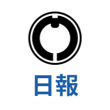

丸門建設の作業日報・点検表・報告などをスマホから入力するアプリです。最初に1回だけ、ホーム画面に入れてください。
LINE・Gmail・Yahoo!などのアプリの中や、ほかのブラウザで開くと、ホーム画面に入れられません。必ず上のブラウザで開いてから、下の手順に進んでください。
確実な開き方：Safari（AndroidはChrome）を開いて、上のアドレス欄に marumonkeiri-code.github.io/nippo と打って開きます。QRコードを読んでも大丈夫です。
ページが開いたら、下の手順で「ホーム画面に追加」をします。自分のスマホの種類（iPhone か Android）を選んで、順番どおりに進めてください。
LINEで届いたリンクから開いた人も、同じ手順です。
カメラをQRコードに向けると、黄色いボタンが出ます。黄色いボタンを押すと、Safari でページが開きます。
Safari を開いて、アドレス欄に marumonkeiri-code.github.io/nippo と打って開いても同じです。
画面の下にある、四角から上向きの矢印が出たボタンを押します。
見当たらないときは、画面の下（または右下）の「…」を押してから「共有」を押してください。画面を少し下にずらすとボタンが出ることもあります。
下から出てきたメニューを上に指でずらすと、「ホーム画面に追加」があります。それを押します。
一番下にあることが多いです。「ブックマークを追加」と間違えないでください。
名前が「作業日報」になっていることを確かめて、右上の「追加」を押します。
「Webアプリとして開く」が出たら、オン（緑）のままにしてください。
ホーム画面に青と緑のアイコン（作業日報）ができたら完了です。次からは、このアイコンを押して開いてください。
最初に開いたときだけ、暗証番号を入れます。暗証番号は事務所に聞いてください。
カメラ（またはGoogleレンズ）をQRコードに向けて、出てきたリンクを押します。Chrome でページが開きます。
どのアプリで開くか聞かれたら「Chrome」を選んでください。Chrome を開いて、アドレス欄に marumonkeiri-code.github.io/nippo と打って開いても同じです。
ページの上に「このアプリをホーム画面に入れましょう」と出たら、緑の「ホーム画面に入れる」を押して、手順4へ進みます。
案内が出ないときは、手順3へ進んでください。
右上の「︙」（縦に点が3つ）を押して、メニューの「ホーム画面に追加」または「アプリをインストール」を押します。
確認が出たら、「インストール」（または「追加」）を押します。もう一度「ホーム画面に追加」と聞かれたら、「追加」を押します。
ホーム画面（またはアプリ一覧）に青と緑のアイコン（作業日報）ができたら完了です。次からは、このアイコンを押して開いてください。
最初に開いたときだけ、暗証番号を入れます。暗証番号は事務所に聞いてください。
LINEの中の画面では、ホーム画面に入れられません。画面の右下（または右上）の「︙」や共有ボタンを押して、iPhoneは「Safariで開く」、Androidは「ブラウザで開く」（または「他のアプリで開く」→ Chrome）を選んでから、上の手順2へ進んでください。
【作業日報アプリのお知らせ】 作業日報・点検表などをスマホで入力できるアプリができました。 下のリンクを押して、出てくる案内の通りに「ホーム画面に追加」をしてください（最初の1回だけです）。 アプリ：https://marumonkeiri-code.github.io/nippo/?openExternalBrowser=1 入れ方の説明（画像つき）：https://marumonkeiri-code.github.io/nippo/install.html 暗証番号は事務所に確認してください。
リンクの最後の「?openExternalBrowser=1」は、LINEの中ではなくSafariやChromeで開くための印です。消さずにそのまま送ってください。